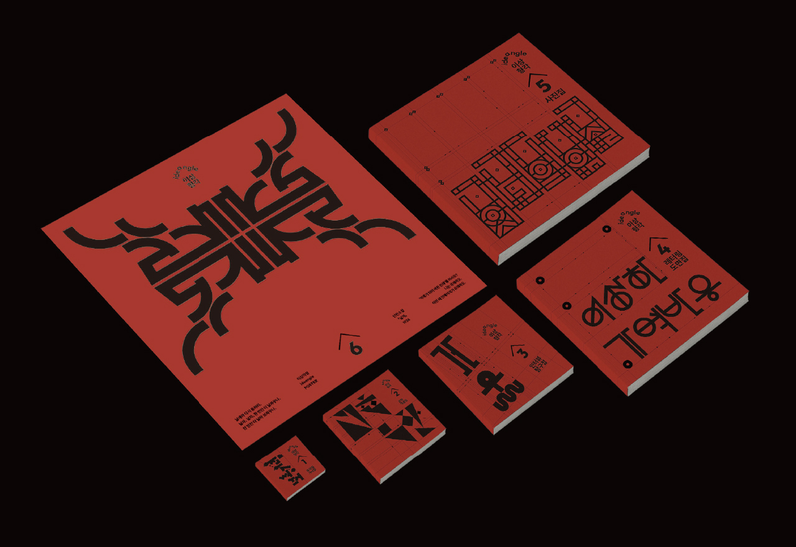
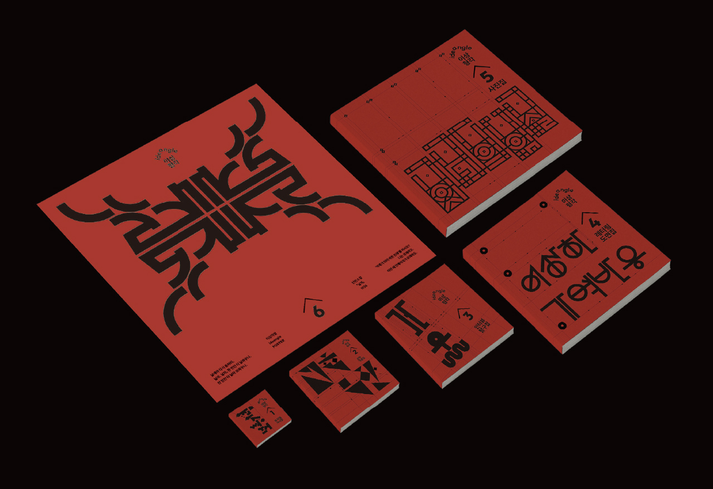

이상각형
ideangle
홍민우
사각형의내부의사각형의내부의사각형의내부의사각형의내부의사각형. 26세로 단명한 시인 이상이 펼쳤을 세상에 주목한다. 문학성과 더불어 건축가의 면모를 상상하는 한글 레터링과 6권의 편집물로 그에 대한 탐구를 나열한다. 이는 탐구를 조적하는 벽돌이고 가능성이 확장된 사각형이다.

이상각형
ideangle
홍민우
사각형의내부의사각형의내부의사각형의내부의사각형의내부의사각형. 26세로 단명한 시인 이상이 펼쳤을 세상에 주목한다. 문학성과 더불어 건축가의 면모를 상상하는 한글 레터링과 6권의 편집물로 그에 대한 탐구를 나열한다. 이는 탐구를 조적하는 벽돌이고 가능성이 확장된 사각형이다.
 

2025ⓒSeoul National University of Science and Technology.All Rights Reserved.